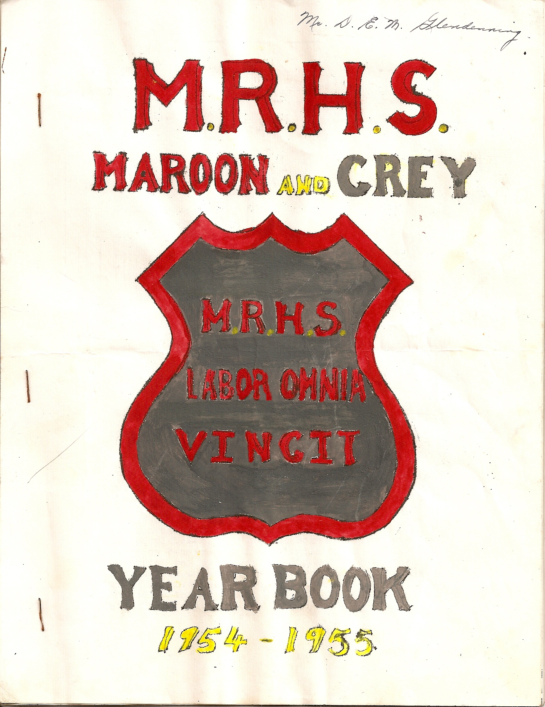
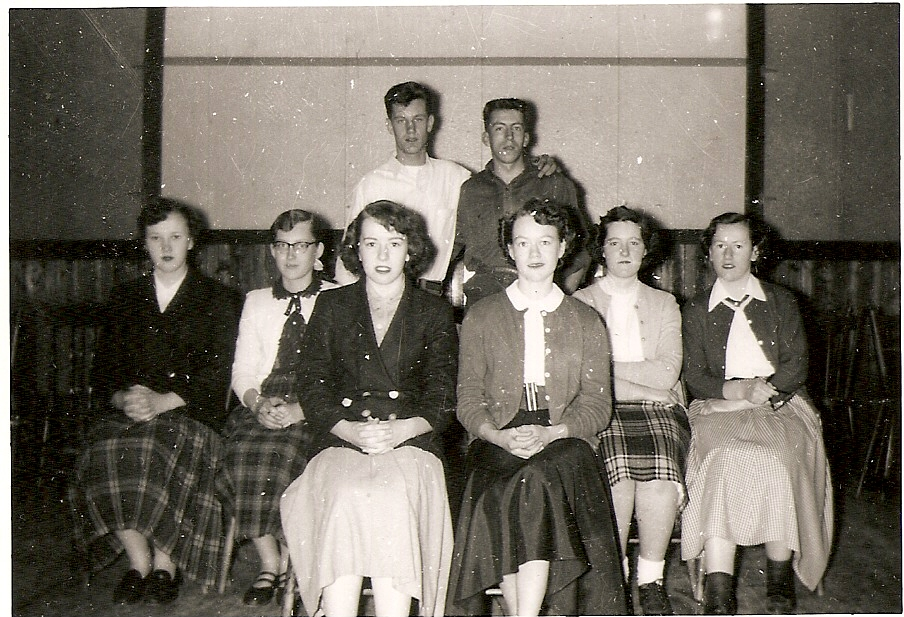
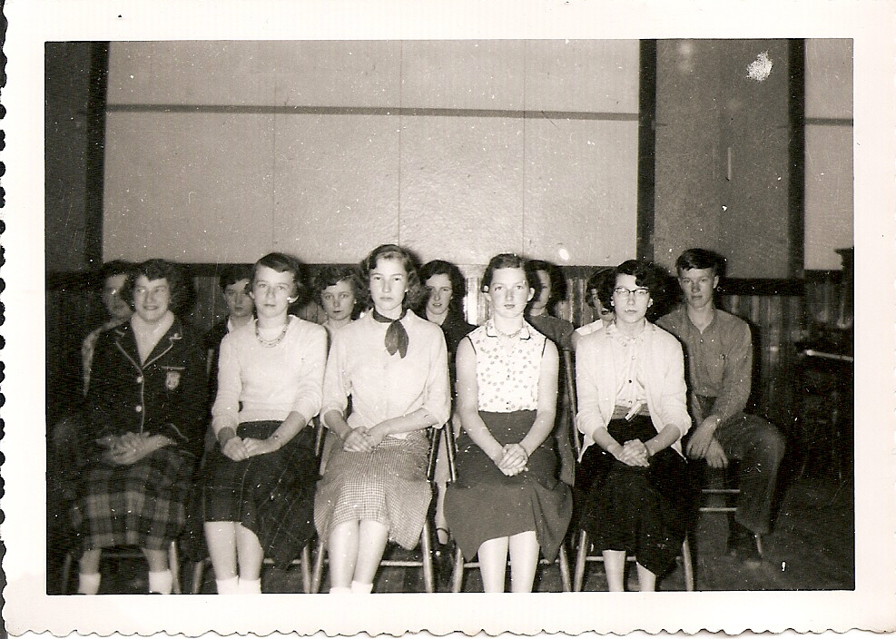
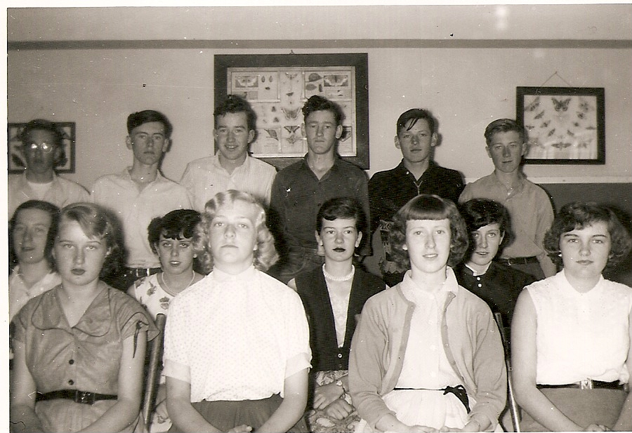
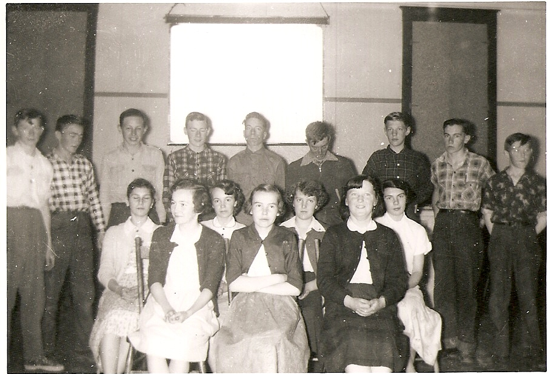
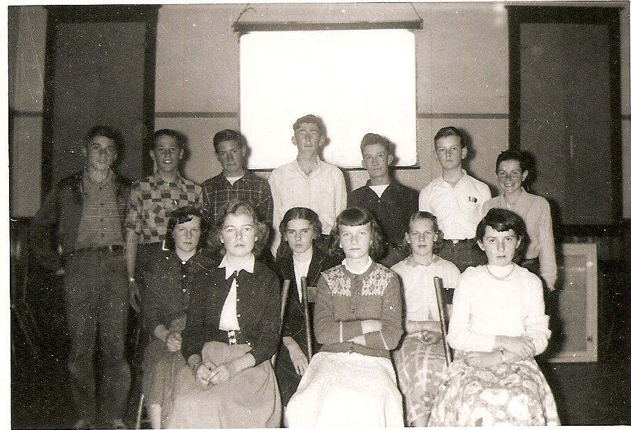
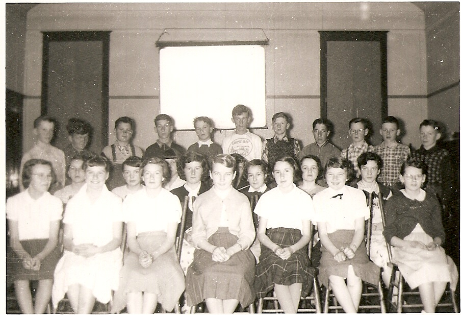

The Family Chronicle
No. 149 January 13, 2008
____________________________________________________________________
MRHS 1954-1955

I was delighted to come across a 1954-1955 yearbook and some photos from the Miramichi Rural High School among my belongings. Some items are included in this yearbook but others will follow in future issues.

MRHS Grade 12 Graduates 1954-1955
Doris Fraser
Betty MacLean
Teddy Fowlie
Jean Gregan
Lois Williston
Jean Cameron
Claude Kingston
Doreen MacRae

Grade 11
Marjorie Mills
Joan MacDonald
June L MacDonald
David Williston
Eva Fraser
Wendall Gregan
Eleanor Bransfield
Maxine MacDonald
Neil Watling
Edgar MacDonald
Jimmie Godfrey
June W (MacDonald)
Cecelia McClenaghan
Peggy Gregan
Ralph MacDonald
The Family Chronicle (Copyright) is an occasional newsletter published by Don Glendenning and posted on the family website. It is intended to share information about my family, community and the times in which I grew up. While every effort is made to be accurate, errors are likely to occur. Comments, enquiries and information may be sent to 62 Queen Elizabeth Drive, Charlottetown, PEI, C1A 3A9. Tel: 902 892 5859. Email: don@glendenning.net Web: www.glendenning.net/don

Grade 10
Elizabeth Williston
Glenn Russell
Lola Jenkins
William Godfrey
Jean Williston
Sylvia MacLenaghan
Betty Williston
Verona Taylor
Joan Gulliver
Adelle Fowlie
Blanche MacDonald
Edna MacRae

Grade 9
Dorothy MacDonald
Jackie Wilson
Emily Williston
Stephen Glendenning
Sandra Taylor
Haley Williston
Laura Jenkins
Gerald Taylor
Janet Kingston
Jackie Gregan
Stella Fraser
Junior Ross
Jean Wilson
Herbie Williston
Garth Williston
Eldon Chapman

Grade 8
Leslie Gregan
Mildred Murdock
Jane MacDonald
Anna Fowlie
Doris Adams
Lee MacDonald
Leonard Russell
Wayne Cameron
Stephen Bransfield
Harry McLenaghan
Merlin Chapman
John Dean
Joan MacDonald

Grade 7
Julia MacDonald Vera Adams
Frances Fraser Rhona Gulliver
Shirley MacDonald Joy Taylor
Rose-Mary Hallihan Eleanor Williston
Helen Lewis Laura Belding
Helen MacDonald Marion MacDonald
Isabel Dutcher Lillian MacDonald
Barbara MacLean Ronny Kingston
Robert Carter Brent Daigle
Billy Scott Donnie Barry
Wayne Noble Albert Fowlie
Robert Taylor Bliss Watling
John MacDonald Alexander Newton